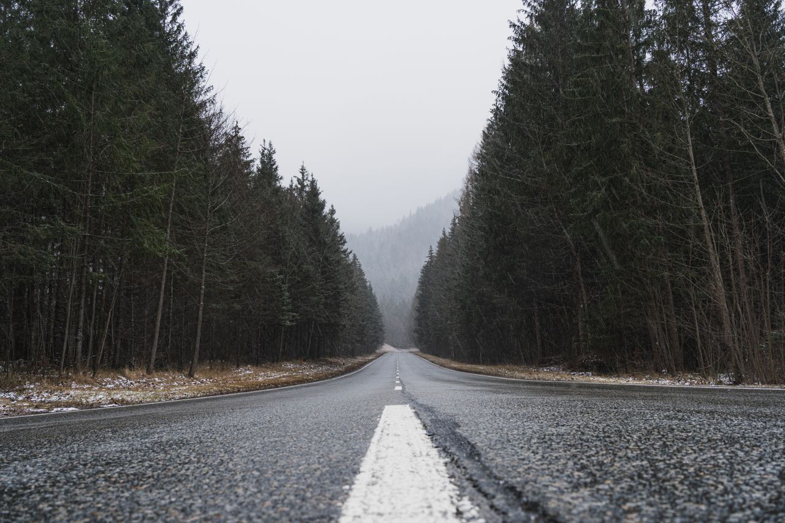

Фритрек и нулевой спринт: Подготовка к работе

Это было самое начало пути. На этом этапе важно было проникнуться основами и настроиться на учёбу. И, возможно, подумать, как новые знания могут повлиять на ваше будущее.
Я понял, что обучение — это не только теория, но и постоянная практика, поиск решений и работа над ошибками. Именно здесь начинает формироваться первый опыт самостоятельной работы и привычка не бояться сложных задач. Этот этап стал для меня отправной точкой для дальнейшего погружения в профессию.